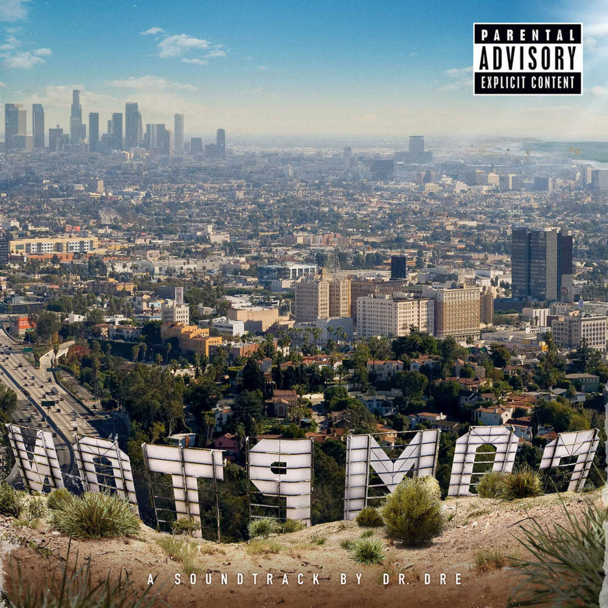

ROBIN HANDOUS
Programmer / Batch #98 @Le Wagon Montreal
Things I like: croissants, solving the world's problem (like creating a fantasy football application) and doing music.
Check out my musicMy favorite albums
|  |
Dr.Dre - ComptonCompton is Dr. Dre's first record in 16 years, following news that his long-awaited Detox has been scrapped. Billed as a soundtrack to coincide with the new N.W.A. biopic Straight Outta Compton, the album finds him sounding charged-up, relevant, and coming to terms with his career for himself, not others. |

|
Anderson Paak - MalibuThe West Coast-based rapper and singer/songwriter Anderson .Paak showed up frequently on Dr. Dre’s Compton. His third album, his most assured and most personal project yet, is informed by voices from the past and full of guests (the Game, ScHoolboy Q, Talib Kweli) who are given ample space to do their best work. Malibu is an expansive opus that flows in multiple directions like a classic '70s double album. |

|
Fleetwood Mac - RumorUpon its release in 1977, Rumours, now reissued as a 4xCD/DVD/LP box set featuring live recordings, alternate mixes, and studio outtakes, became the fastest selling LP of all time, moving 800,000 copies per week at its height. Its success made Fleetwood Mac a cultural phenomenon and also set a template for pop with a gleaming surface that has something complicated, desperate, and dark resonating underneath |
About this page
This page has been coded during the FullStack program @LeWagon. That was probably the best experience of my entire life.